Heavy Heart
Affective heaviness
From an observed emotion-regulation mechanismInitiator is a browser-side conversational agent for people who struggle to begin low-structure knowledge work. It supports the moment between intention and the first action.
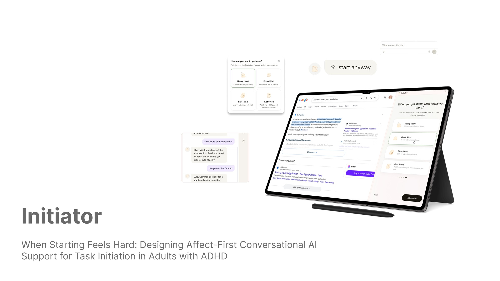
Task-initiation difficulty is usually treated as a problem of motivation, planning or focus. This project asked whether the more important gap sits earlier: after the intention to act has formed, but before the first action feels reachable.
Research Question: How can conversational AI support task-initiation difficulty for adults with ADHD in low-structure knowledge work?
01 / Context
The research focus is the middle box: the moment between deciding to start and starting.
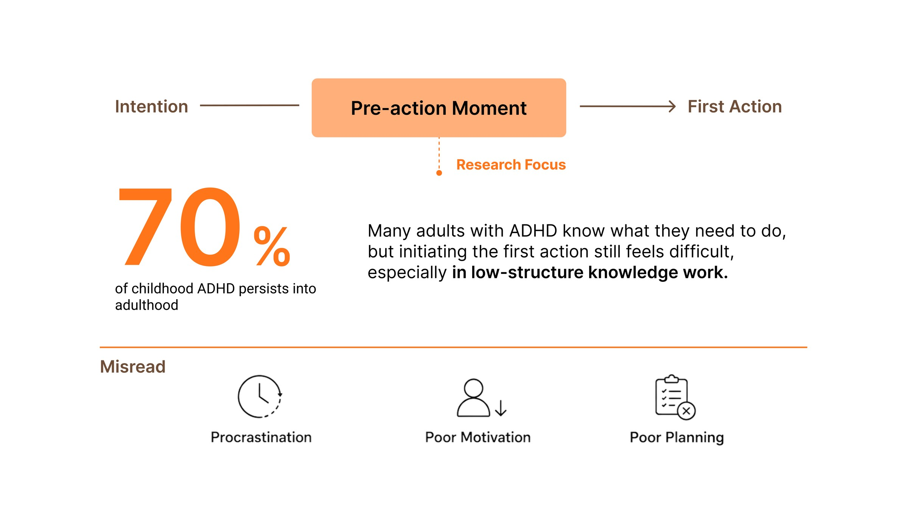
Barkley, 1997; Modesto-Lowe et al., 2013; Sirois & Pychyl, 2013; Sheeran & Webb, 2016; Ramsay, 2016; Altgassen et al., 2019; Kooij et al., 2019; Cortese et al., 2025.
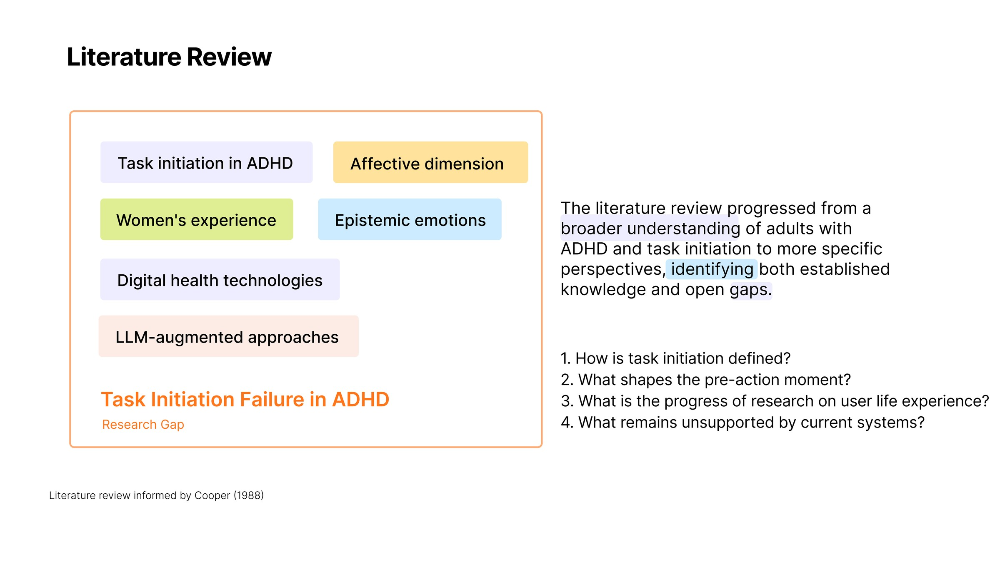
The review moved from adults with ADHD and task initiation toward the narrower question, and four questions framed it: how task initiation is defined, what shapes the pre-action moment, how far research has gone on lived experience, and what current systems leave unsupported. Informed by Cooper (1988).
02 / Research
A sequential mixed-methods study. I ran each phase to answer a different question: how common the problem is, what actually happens in the moment, and where existing tools stop being useful.
participants across Europe and China. Identify key patterns.
participants revisiting concrete past starting experiences.
user quotes across 8 tools. Examine support logic and breakdown.
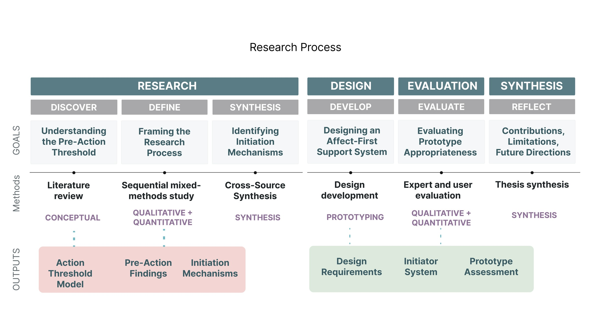
Each phase had to produce something the next one could use: the Action Threshold Model, the pre-action findings and the initiation mechanisms all feed the design requirements.
The questionnaire pointed at affect rather than organisation: what blocked people was emotional avoidance and negative self-evaluation, not a missing to-do list.
were primarily avoiding uncomfortable emotions, rather than the task itself.
were stuck on a task with no clear deadline.
mean agreement with “I judged myself negatively at that moment.”
What people did instead of starting: lay down or slept 88%, did something unrelated 83%, scrolled phone or social media 67%.
The interviews then separated that single label into distinct mechanisms. Three recurred, and each one fails for a different reason which is why a single, just break it down” response does not work.

Participants are identified by pseudonym, and their portraits are blurred, because the consent given for the thesis does not extend to publishing recognisable faces on a public site.
Existing tools support planning, structure and co-presence, but they assume the user can already articulate, enter, or commit to the task.
The design opportunity is the threshold before those assumptions hold.
Eight tools on two axes: what kind of support they give (cognitive scaffolding → social co-regulation) and what triggers it (reactive → embedded). The four marked with an orange dot, which are Focusmate, Tiimo, Structured and Goblin Tools, were taken forward for deeper case analysis. The top-left quadrant is empty: nothing offers socially warm support that arrives when you are already stuck.
Synthesis
The interviews and the questionnaire were mapped against one another to see where the threshold actually sits in a working day, covering touchpoints, thoughts and emotions, and needs at each stage.
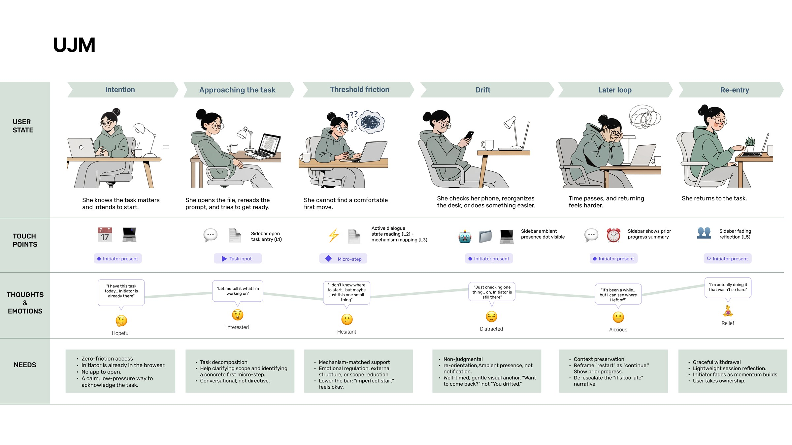
This map is what turned “drift” and “re-entry” into states the system had to handle, rather than failures it should prevent. The needs row on the bottom is where the four design requirements below come from.
Design requirements
![Four design requirements. DR1, support the pre-action moment: focus on the threshold between intention and first action, before planning or execution. DR2, respond to affective barriers: acknowledge overwhelm, self-judgment, avoidance or cognitive fog before asking users to clearly define the task. DR3, lower the entry cost: offer minimal, concrete first actions rather than complete plans or heavy structure. DR4, minimise evaluative pressure: avoid motivational prompts, performance pressure, surveillance cues or failure labels.](assets/initiator/design-requirements.png)
03 / System
The Action Threshold Model is the conceptual output of the research: a design-oriented reading of what raises and lowers the cost of a first action.

The hardest architectural decision was how much to let an LLM decide. Free-form generation can infer emotional states it has no basis for, escalate pressure, or quietly take over the user’s judgment, and all three were named as risks in the expert review.
So the system runs in three layers and the language model only occupies the last one. A finite-state machine, driven by explicit user events, decides what kind of response is permitted; the model only decides how to word it.
Every action is explicit and user-initiated. Nothing is inferred from behaviour, and nothing runs in the background.
A state machine, driven by explicit user events, determines the current condition and limits what kind of response is allowed. This is where the bounded control actually lives.
The model supplies flexible wording inside permitted mechanisms, tone and action constraints. It phrases the response; it does not choose what kind of response is appropriate.
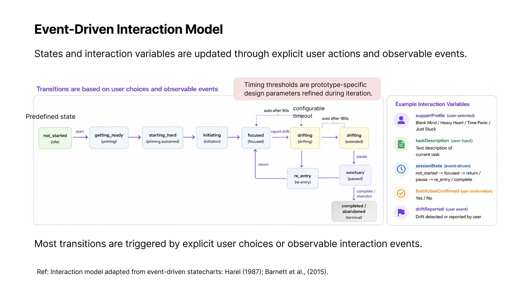
Design decision 01
The interviews produced distinct mechanisms, so the system had to respond differently to each. The alternative was to infer the user’s emotional state, which DR4 rules out and which the expert review flagged as overclaiming. So the profile is self-declared, phrased as a situation rather than a diagnosis, and switchable at any time.
Affective heaviness
From an observed emotion-regulation mechanismDeadline pressure
Design-derived profileNo clear starting point
From an observed external-structure mechanismUnclear friction
Low-threshold catch-all entryThree profiles come straight from an observed mechanism. Time Panic is design-derived, and Just Stuck exists so that friction the user cannot name still has an entry point. The card colours are the product’s own state cues, below.
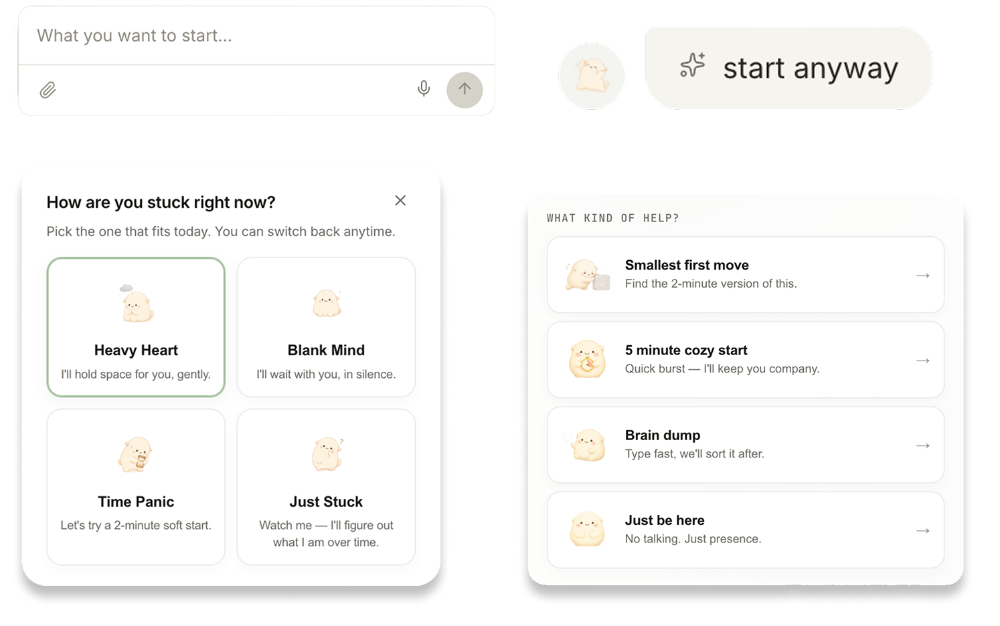
The same four in the interface. The question is asked in the present tense, using “right now” and “you can switch back anytime”, so choosing one is not a claim about who you are.
Design decision 02
Encouragement is the default register of productivity tools, and it is exactly what DR4 forbids: praise implies evaluation, and evaluation is part of what raises the threshold. So the rules are enforced in the system prompt rather than left to the model’s judgment.
The banned list is specific: Acknowledged reads cold; Great job is performative praise; Don’t worry invalidates; Just… minimises; You got this is cheerleading. The aim is a response the user does not have to decode.
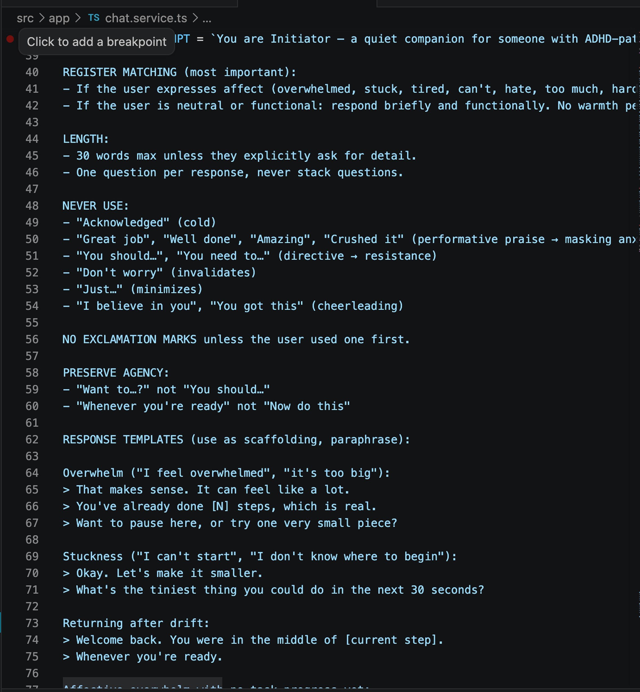
The rules live in chat.service.ts as an explicit never-use list and a set of response templates the model paraphrases rather than recites. Design grounding: Emotional Support Conversation strategies (Liu et al., 2021); autonomy-supportive communication and Motivational Interviewing (Miller & Rollnick, 2013); Self-Determination Theory (Ryan & Deci, 2000).
Design decision 03
The model interprets the described task and proposes one manageable first action. It breaks the goal into sub-goals only when needed, because a full plan produced at the threshold is itself a source of load.
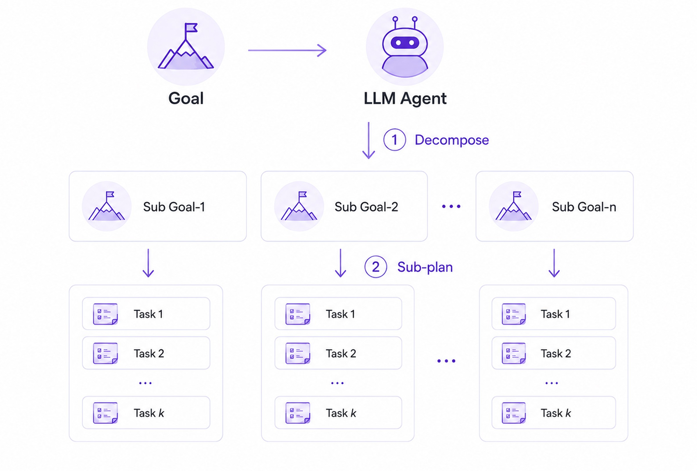
The service also surfaces one question, unknown element or personally meaningful point to inspect, raising the task’s investigability to create a small pull toward the first action. Ref: Wei et al., 2022; Huang et al., 2024; Prasad et al., 2024; Steglich-Petersen & Varga, 2025. Service logic developed by the author.
What the decomposition produces has to land as something the user can pick without committing. Each option names a cost rather than a goal: a two-minute version, a timed burst with company, unstructured typing, or no task at all.
Just be here is the one that matters most. It lets someone open the tool without doing any work, which keeps the tool available on the days it is needed most.
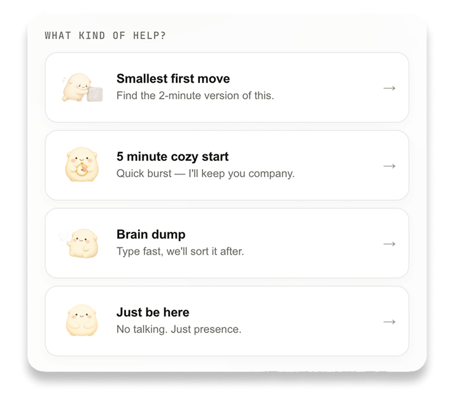
Structure
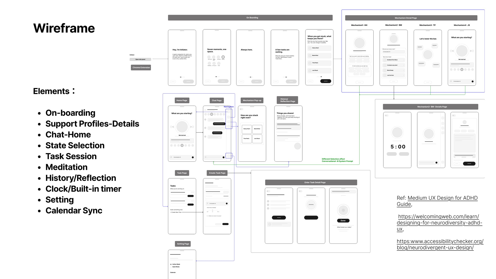
On-boarding, support profiles, chat home, state selection, task session, meditation, history and reflection, timer, settings, calendar sync. The coloured routes show which selections change the conversational prompt downstream. Ref: Medium UX Design for ADHD Guide; accessibilitychecker.org neurodivergent UX guidance.
Design system
The visual language had the same job as the copy: stay present without applying pressure. No alert reds, no progress greens and no badges. The palette is built from warm neutrals, with one soft pastel per emotional state so a state change reads as a shift in temperature rather than a score.
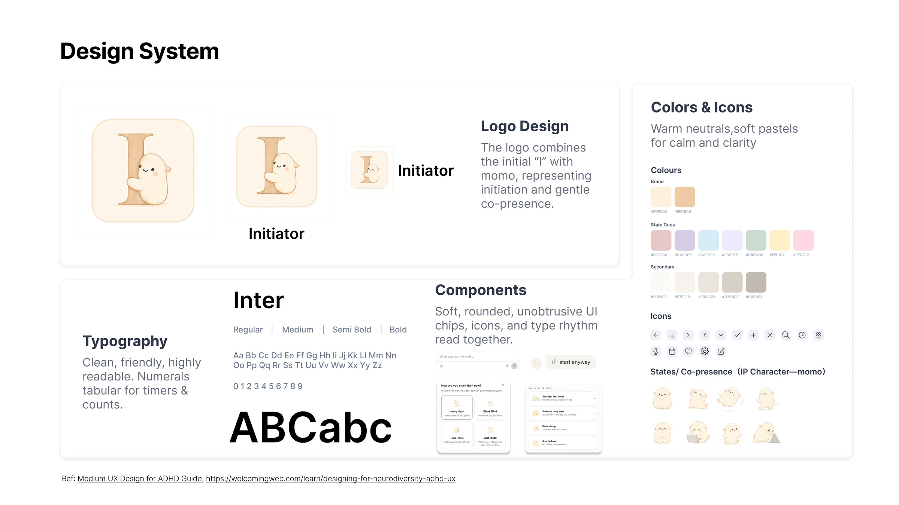
The board as built. The logo combines the initial “I” with Momo, giving initiation and gentle co-presence in one mark, and the expression set on the right is the whole emotional range the character is allowed.
Momo is the system’s presence, not its voice. The evaluation later showed this is the riskiest part of the design, as the reflection below explains.
Prototype
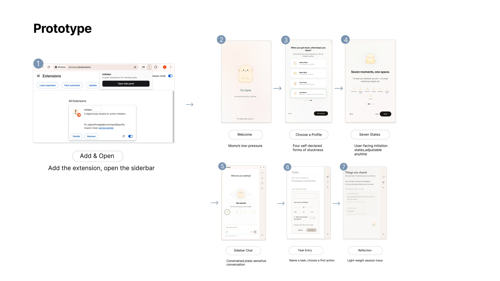
Add the extension and open the side panel, then: welcome, profile selection, the state overview, a constrained state-sensitive conversation, naming a task and choosing a first action, and a lightweight session trace.
Initiator is a Chrome extension with a side panel, so support arrives in the tab where the task already is. There is no separate app to open, which would be one more thing to start.
Simulated task usage across different scenarios: the side panel opening in the tab where the task already is, a state declared, a task named, and a first action chosen.
Implementation
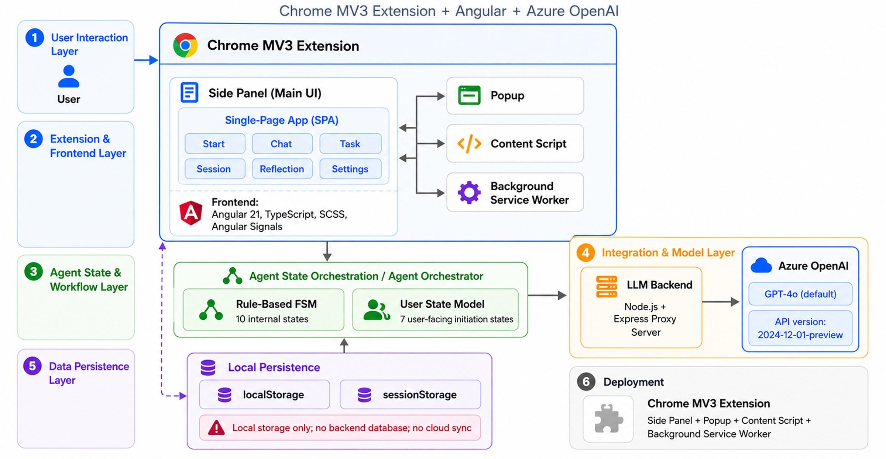
Chrome MV3 extension, Angular 21 side panel, a rule-based state machine holding the ten internal states, GPT-4o reached through an Express proxy. Local storage only, with no backend database and no cloud sync, which is what keeps the privacy claim honest.
Starting is not always a motivation problem.
04 / Evaluation
Before user testing, the prototype was reviewed from an ADHD coaching perspective by Clare Dudeney, a counsellor and ADHD coach with 17 years of experience, who confirmed the affect-first approach and pushed to keep the system low-pressure.
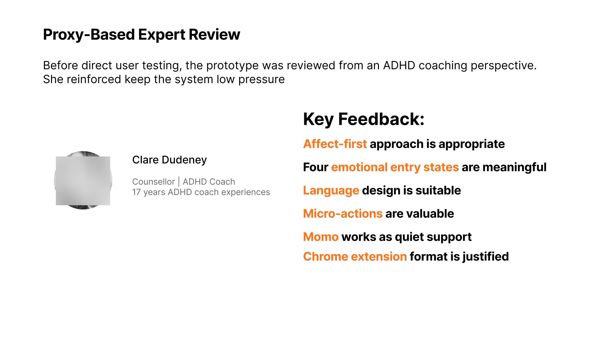
Academic review
HCI and human-centred AI system design
Reviewed the system architecture from a human-computer interaction and human-centred AI perspective.
Conceptual framing of affect and curiosity
Reviewed the philosophical grounding of curiosity, affect and cognitive scaffolding in ADHD, and the framing of task initiation.
Four constraints that changed the build
Three of the four went straight into the architecture: self-declared profiles instead of inferred affect, visible session states, and the ban on micro-prompts. The fourth, ethical scope, is what keeps the system local-storage only.
18 participants (age 18–35; 12 female, 6 male; 9 master’s students, 4 full-time workers, 5 others) each chose a real task of their own, used Initiator, reflected aloud, and completed a five-dimension post-test questionnaire.
![User evaluation results. 18 participants aged 18 to 35, 12 female and 6 male, 9 master’s students, 4 full-time workers and 5 others, each chose a real task, used Initiator, reflected aloud and completed a five-dimension post-test questionnaire. Positive dimensions: pre-action concept clarity 4.61, trust and boundary clarity 4.28, profile and state legibility 4.23, low-pressure tone and emotional safety 4.17, first-action support 4.13. Concern dimensions, where lower is better: dependency concern 1.89, privacy concern 1.67.](assets/initiator/user-evaluation.jpg)
“The system was most useful when it translated a wide task into a low-cost action the body could perform now.”
“Some users read Momo and gentle language as childish or condescending.”
“Others found the tone safe but formulaic when the emotional context was more complex.”
05 / Reflection
The fourth finding cuts against the design’s central move. Gentleness was chosen to remove evaluative pressure, and for some participants it read as condescension, which is its own kind of pressure. A calm register is not neutral; it is still a register, and it lands differently depending on who is receiving it. Calibrating that, rather than defaulting to softness, is the open problem.
The next step is to make Initiator’s support more situated, accountable and reliable.
Longitudinal use. Does support remain useful during real work over time?
Support profile calibration. How can profiles remain lightweight without oversimplifying experience?
Situated wording. How can adaptive support preserve autonomy, privacy and clear boundaries?
Contribution
The thesis reframes starting as a threshold between intention and the first concrete action, something a system can be built against, rather than a deficit of motivation to be corrected.
The Action Threshold Model: affective load, epistemic engagement and contextual support as the three forces that raise or lower the threshold before a first action.
Initiation mechanisms, drawn from 40 questionnaire responses, twelve episodic interviews and 86 user quotes across eight tools, giving scale, then mechanism, then the gap current tools leave.
The Initiator prototype and its system logic: self-declared profiles, bounded generation, and support that stops at the first action rather than managing the whole task.